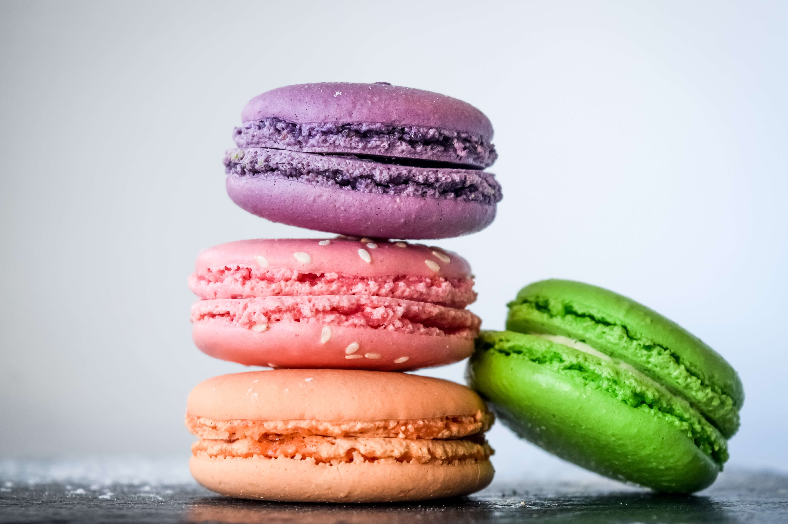

RECETAS
Macarons


by Ana Maria Zamorano
INGREDIENTES
- 110 gramos de claras avejentadas a temperatura ambiente
- 100 gramos de de harina de almendras
- 400 gramos de de azúcar impalpable o azúcar glass
- 40 gramos de de azúcar refinada
- 1 cucharadita de de esencia de vainilla
- 2 gizcas de colorante en gel
- 160 gramos de queso crema
- 45 gramos de manteca
- 1 jugo de un limón
PREPARACION
- Colocar la harina de almendras y los 200 gramos de azúcar impalpable en un bowl y luego mezclarlos. Tamizarlo dos veces para eliminar grumos y los pedacitos de almendra.
- Batir los 110 gr de claras (media taza de claras)durante un minuto a punto nieve, agregar la esencia de vainilla y el azucar (40 gr) y batir 3 minutos mas.
- Añadir colorante en gel y batir para mezclar el color.
- Añadir la mezcla del polvo de almendras y el azúcar impalpable en movimientos no tan bruscos, intentando que las claras pierdan aire. No hacer más de 40 movimientos envolventes.
- Colocar la mezcla en una manga, y sobre una placa de teflón hacer círculos pequeños con la manga, con una separación entre ellos para evitar que se peguen entre sí.
- Dejarlos reposar entre una y dos horas. La clave es que el macaron no quede pegado.
- Precalentar el horno a temperatura media de 15 minutos.
- Poner los macarons a 180 grados y cocinarlos durante casi 20 minutos.
- Esperar a que los macarons enfríen y despegarlos con ayuda de un cuchillo.
- Para elaborar el relleno es importante tomar un bowl y mezclar la manteca, el jugo de un limón, el queso crema y el azúcar impalpable.
- Montar los macarons con la mezcla, con las tapas y una vez ya montados ya se pueden disfrutar